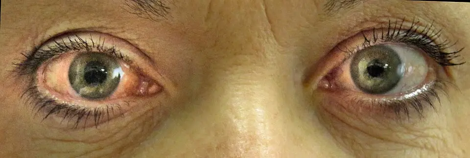
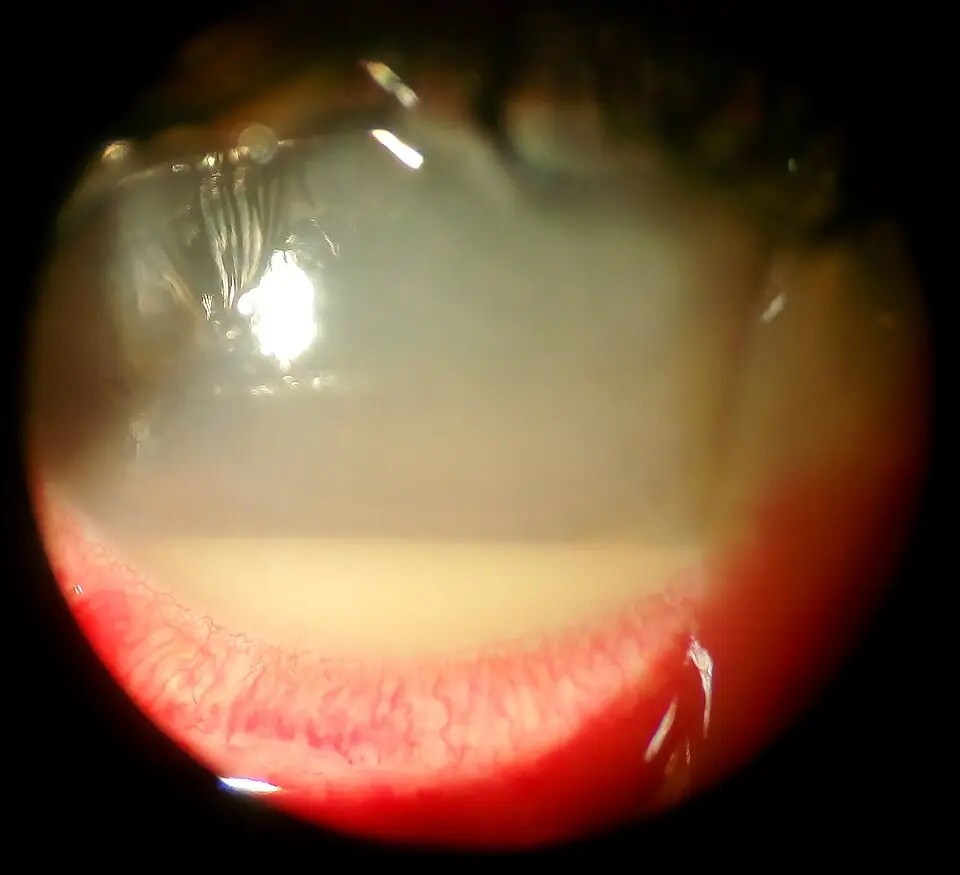

Yeux douloureux, rouges ou prurigineux ; écoulement oculaire — S1.17
Un œil rouge, douloureux, prurigineux ou qui coule relève surtout d’une conjonctivite, d’une sécheresse ou d’une blépharite, que le médecin de famille traite lui-mêmeS2S4. Quatre urgences se cachent pourtant derrière ce signe : crise aiguë de fermeture de l’angle (E1), kératite infectieuse (E2), uvéite antérieure aiguë (E3) et sclérite (E4)S2S6S7. Leur retard menace la vision en quelques heures ou quelques jours ; le médecin les exclut donc avant toute conduite symptomatiqueS2S6. Le médecin cherche donc d’abord une baisse de vision, une douleur intense, une photophobie et un port de lentilles, puis il classe les causes bénignesS2S5. Il prescrit enfin selon l’AIPS (information professionnelle suisse) du médicament, et il écrit « hors AIPS » lorsqu’un produit recommandé n’y figure pasAIPS 68519AIPS 21191.
Contenu établi à partir des sources citées ; non validé cliniquement par un médecin.
1. Définition
Les HUG (Hôpitaux universitaires de Genève) définissent l’œil rouge comme un signe non spécifique, qui peut traduire une affection bénigne ou une pathologie menaçant le pronostic visuelS2.
PROFILES 2023 regroupe sous la situation S1.17 l’œil douloureux, rouge ou prurigineux et l’écoulement oculaire, présentés seuls ou associésS1.
2. Épidémiologie (Suisse, puis Europe)
En Suisse, l’œil rouge représente 2 à 3 % des motifs de consultation chez les médecins de premier recours, selon la stratégie des HUG publiée en 2025S2. Par ailleurs, la conjonctivite aiguë y constitue l’infection oculaire la plus fréquente, et l’origine virale explique environ 80 % des cas chez l’adulteS2.
L’adénovirus cause la très grande majorité des conjonctivites virales, tandis que l’enfant présente surtout une conjonctivite bactérienne à Haemophilus influenzae ou à Staphylococcus aureusS2. La conjonctivite allergique touche environ 40 % de la population, ce qui en fait la cause de rougeur la plus répandue hors infectionS2.
En Allemagne, un médecin de premier recours voit chaque semaine 4 à 10 patients avec une plainte oculaire, dont la plupart présentent un œil rougeS5. Une revue suisse de 2024 rappelle cependant que seule une petite part de ces patients exige une orientation ophtalmologique urgenteS4.
Au Royaume-Uni, la brûlure chimique oculaire atteint 10,7 personnes pour 100 000 par an, surtout des hommes en âge de travaillerS12. L’hémorragie sous-conjonctivale reste en revanche idiopathique dans la plupart des cas et devient plus fréquente après 50 ansS10.
L’uvéite antérieure récidive chez un patient sur trois, et aucune cause n’apparaît dans environ 50 % des casS8. La sclérite reste en revanche rare ; elle touche surtout la femme d’âge moyen, et environ un tiers des patients présentent une maladie inflammatoire associéeS9.
Ainsi, 60 % des conjonctivites infectieuses guérissent seules en 1 à 2 semainesS2. En revanche, la crise de fermeture de l’angle ne cède pas spontanémentS6. Le rang de chaque diagnostic et son rang E figurent dans la fenêtre classement des dix diagnostics, et les chiffres datés dans la fenêtre chiffres sourcés.
Classement des dix diagnostics différentiels par fréquence et gravité
Le rang suit la fréquence publiée en Suisse, puis en Europe ; un rang sans pourcentage repose sur l’argument sourcé de sa ligne.
| Rang | Diagnostic (fichier) | Fréquence ou argument du rang | Gravité | Source |
|---|---|---|---|---|
| 1 | Conjonctivite virale non herpétique (DX.1) | 80 % des conjonctivites infectieuses de l’adulte sont virales. | Elle guérit seule mais se transmet très facilement. | S2 |
| 2 | Conjonctivite allergique (DX.3) | Elle touche environ 40 % de la population. | Elle gêne sans menacer la vision. | S2 |
| 3 | Sécheresse oculaire (DX.4) | 3e rang : les HUG la qualifient de pathologie très fréquente. | Elle altère la cornée dans les formes sévères. | S2 |
| 4 | Conjonctivite bactérienne aiguë (DX.2) | 4e rang déduit : elle représente le complément des 80 % viraux chez l’adulte et domine chez l’enfant. | Elle guérit le plus souvent ; la forme hyperpurulente exige un avis. | S2 |
| 5 | Blépharite (DX.5) | 5e rang argumenté : les HUG la décrivent comme une affection courante. | Elle récidive et entretient la sécheresse. | S2 |
| 6 | Hémorragie sous-conjonctivale (DX.6) | 6e rang argumenté : elle est fréquente et surtout idiopathique après 50 ans. | Elle impose de mesurer la tension artérielle. | S10S2 |
| 7 | Uvéite antérieure aiguë (DX.8) 🚩 | 7e rang argumenté : un patient sur trois récidive, sans prévalence suisse publiée. | 🚩 E3 : elle menace la vision par synéchies et hypertonie. | S8S2 |
| 8 | Kératite infectieuse (DX.7) 🚩 | 8e rang argumenté : le port de lentilles en constitue la cause habituelle. | 🚩 E2 : elle peut perforer la cornée. | S7S2 |
| 9 | Crise aiguë de fermeture de l’angle (DX.9) 🚩 | 9e rang argumenté : elle survient sur un terrain précis (âge, femme, hypermétropie). | 🚩 E1 : la cécité peut survenir en quelques heures. | S2S6 |
| 10 | Sclérite (DX.10) 🚩 | 10e rang : le College of Optometrists la qualifie de rare. | 🚩 E4 : la forme nécrosante détruit la sclère. | S9 |
Les rangs 3 à 10 restent argumentés ou déduits, car aucune source suisse lue ne publie leur prévalence propreS2.
Chiffres sourcés et datés
| Chiffre | Population | Année | Source |
|---|---|---|---|
| 2 à 3 % des motifs de consultation sont un œil rouge. | Médecine de premier recours, Suisse | 2025 | S2 |
| Environ 80 % des conjonctivites infectieuses de l’adulte sont virales. | Adultes, premier recours | 2025 | S2 |
| Environ 40 % de la population présente une conjonctivite allergique. | Population générale | 2025 | S2 |
| 60 % des conjonctivites infectieuses guérissent seules en 1 à 2 semaines. | Conjonctivites infectieuses | 2025 | S2 |
| 4 à 10 patients par semaine consultent pour un symptôme oculaire. | Médecins de premier recours, Allemagne | 2017 | S5 |
| 10,7 brûlures chimiques pour 100 000 habitants surviennent par an. | Population, Royaume-Uni | 2026 | S12 |
| Un patient sur trois récidive après une uvéite antérieure. | Uvéites antérieures | 2025 | S8 |
| La sclérite antérieure représente 9 cas sur 10, dont 15 % de formes nécrosantes. | Sclérites | 2026 | S9 |
Ces chiffres orientent le raisonnement, mais aucun ne remplace la recherche des drapeaux rouges chez un patient donnéS2.
3. Physiopathologie
La rougeur résulte d’une vasodilatation des vaisseaux conjonctivaux, épiscléraux ou ciliaires, et sa topographie indique la structure atteinteS2S13. Les HUG classent ainsi les causes selon la paupière, la conjonctive, la cornée, la sclère, l’uvée et l’angle irido-cornéenS2. La fenêtre anatomie de l’œil rouge montre ces structures sur une coupe en couleurs.
À la surface, l’adénovirus, la bactérie ou l’allergène enflamment la conjonctive ; la réaction allergique correspond à une hypersensibilité de type 1 médiée par les IgES2. Cette atteinte superficielle épargne la cornée et la pupille, ce qui explique une vision conservée et une gêne plutôt qu’une douleurS2.
Dans la sécheresse, une insuffisance lacrymale quantitative ou qualitative prive la surface de lubrification, ce qui provoque brûlure et sensation de sableS2. La blépharite postérieure aggrave cette sécheresse, car l’obstruction des glandes de Meibomius altère la couche lipidique du film lacrymalS2.
Dans la kératite, l’infection de la cornée, surtout bactérienne, entraîne un infiltrat blanchâtre, une douleur vive et une photophobie, puis peut perforer le globeS2S7. Le port de lentilles en reste la cause habituelle, car la lentille favorise l’adhérence bactérienne sur un épithélium fragiliséS7.
Dans l’uvéite antérieure, l’inflammation de l’iris et du corps ciliaire libère des cellules dans la chambre antérieure ; leur dépôt déclive forme l’hypopionS2S8. Le spasme ciliaire explique la douleur profonde et la photophobie, tandis que les synéchies irido-cristalliniennes déforment la pupilleS2.
Dans la crise de fermeture de l’angle, le contact entre l’iris et le trabéculum bloque l’humeur aqueuse, et la pression intraoculaire peut atteindre 50 à 70 mmHgS6. Une pupille en semi-mydriase, provoquée par l’obscurité ou par un médicament, déclenche alors ce blocage pupillaireS6S2. La fenêtre quatre mécanismes graves décrit ces chaînes, et la fenêtre corrélation les relie aux examens et aux traitements.
Anatomie de l’œil rouge : où naît la rougeur
Coupe anatomique de l’œil : Blausen Medical a dessiné cette coupe en couleurs, publiée sous licence CC BY 3.0S13.

Le lecteur recherche d’abord sur le dessin brut la cornée transparente, l’iris bleu, le cristallin et la sclère blanche.
- 1. Le repère 1 montre la cornée, dont l’infection provoque la kératite, une urgence car elle menace la transparenceS13S2.
- 2. Le repère 2 montre l’iris, partie antérieure de l’uvée, dont l’inflammation donne l’uvéite antérieureS13S2.
- 3. Le repère 3 montre le cristallin, dont le contact avec l’iris favorise le blocage pupillaire de la crise de fermeture de l’angleS13S6.
- 4. Le repère 4 montre la sclère, dont l’inflammation profonde définit la sclérite, très douloureuseS13S2.
Ce que l’image décide. Une rougeur concentrée autour de la cornée signe une atteinte profonde, tandis qu’une rougeur diffuse vers les culs-de-sac oriente vers la conjonctiveS2.

Quatre mécanismes graves, de l’amorce à la clinique
| Urgence | Amorce | Développement | Installation clinique | Source |
|---|---|---|---|---|
| Crise de fermeture de l’angle (E1) | Une semi-mydriase survient dans l’obscurité ou sous anticholinergique. | L’iris bombe et ferme l’angle ; l’humeur aqueuse ne s’évacue plus. | La pression monte jusqu’à 50 à 70 mmHg, la cornée s’œdématie et des halos apparaissent. | S6S2 |
| Kératite infectieuse (E2) | Une lentille, une plaie ou une exposition cornéenne ouvre l’épithélium. | Les bactéries ou les champignons envahissent le stroma. | Un infiltrat blanchâtre, une douleur et une photophobie s’installent ; la perforation menace. | S7S2 |
| Uvéite antérieure (E3) | Une maladie associée à HLA-B27, une infection ou aucune cause déclenchent l’inflammation. | Des cellules et des protéines gagnent la chambre antérieure. | Le myosis, le cercle périkératique et parfois un hypopion apparaissent. | S2S8 |
| Sclérite (E4) | Une maladie systémique, comme la polyarthrite rhumatoïde, active une inflammation sclérale. | L’inflammation traverse la sclère et peut la nécroser. | Une douleur sévère, accrue par les mouvements, irradie à la face. | S2S9 |
Corrélation : perturbation, exploration, thérapeutique
| Perturbation | Exploration qui la montre | Thérapeutique qui la corrige (mécanisme) | Source |
|---|---|---|---|
| Le blocage de l’humeur aqueuse élève la pression intraoculaire. | La tonométrie mesure une pression supérieure à 21 mmHg, souvent bien plus haute. | L’acétazolamide réduit la production d’humeur aqueuse ; l’iridotomie laser rouvre le passage. | S6AIPS 21191 |
| L’infection détruit l’épithélium et le stroma cornéens. | La lampe à fente montre l’infiltrat ; le prélèvement identifie le germe. | Un collyre antibiotique intensif, comme la ciprofloxacine, tue les bactéries sensibles. | S2S7AIPS 51898 |
| L’inflammation de l’uvée crée des synéchies et un hypopion. | La lampe à fente montre les cellules et le dépôt déclive. | La dexaméthasone topique freine l’inflammation ; l’atropine rompt les synéchies. | S2AIPS 30058AIPS 46994 |
| L’hypersensibilité de type 1 libère l’histamine des mastocytes. | L’anamnèse d’atopie et le prurit suffisent le plus souvent. | Le kétotifène bloque le récepteur de l’histamine et stabilise les mastocytes. | S2AIPS 55341 |
| Le film lacrymal insuffisant laisse la surface sèche. | La réponse au traitement confirme le diagnostic en premier recours. | Les larmes artificielles remplacent le liquide lacrymal. | S2AIPS 53674 |
4. Démarche diagnostique
Le médecin exclut d’abord les quatre urgences, car elles menacent la vision et ne tolèrent aucun essai thérapeutiqueS2S6. Face à un œil rouge sans traumatisme, il recherche une anomalie visuelle et une douleur, deux signes qui distinguent l’atteinte profonde de l’atteinte superficielleS2.
La durée, le caractère uni- ou bilatéral et l’intensité de la douleur séparent ensuite les causes bénignes, les orientations programmées et les urgencesS5. Le diabétique peut cependant avoir une kératite grave sans douleur, ce qui impose une vigilance particulièreS2.
Pour les causes fréquentes, aucun signe isolé ne distingue une conjonctivite virale d’une conjonctivite bactérienne, si bien que le médecin combine plusieurs élémentsS2. La fenêtre graves d’abord précise le signe qui tranche, le piège et la conduite ; la fenêtre tableau comparatif confronte les dix diagnostics.
Les graves d’abord, puis les discriminants fréquents
| Diagnostic | Élément qui tranche | Piège | Conduite si positif | Source |
|---|---|---|---|---|
| 🚩 E1 Crise de fermeture de l’angle (DX.9) | Une douleur intense avec halos, nausées et pupille en semi-mydriase aréflexique oriente. | La céphalée et les vomissements font croire à une migraine ou à une cause digestive. | Le médecin adresse immédiatement aux urgences ophtalmologiques, sans mydriatique. | S2S6 |
| 🚩 E2 Kératite infectieuse (DX.7) | Une photophobie, un infiltrat blanchâtre et le port de lentilles orientent. | Le diabétique peut ne ressentir aucune douleur. | Il fait retirer les lentilles, garde leur étui et adresse en urgence. | S2S7 |
| 🚩 E3 Uvéite antérieure (DX.8) | Une photophobie, une douleur profonde, un myosis et un cercle périkératique orientent. | Le cercle périkératique reste difficile à voir sans lampe à fente. | Il appelle l’ophtalmologue en urgence pour tout soupçon. | S2 |
| 🚩 E4 Sclérite (DX.10) | Une douleur sévère, accrue par les mouvements et la palpation, irradie au visage. | L’épisclérite donne une rougeur semblable mais une douleur légère. | Il adresse à l’ophtalmologue pour examen et bilan systémique. | S2S9 |
| Conjonctivite bactérienne (DX.2) | Des sécrétions purulentes collent les paupières. | Une conjonctivite hyperpurulente peut révéler un gonocoque. | Il traite par collyre antibiotique ou recherche une infection sexuellement transmissible. | S2 |
| Conjonctivite allergique (DX.3) | Un prurit bilatéral domine chez un patient atopique. | Un corticoïde topique prescrit sans examen masque un herpès. | Il propose l’éviction et un collyre antihistaminique. | S2 |
Tableau comparatif des dix diagnostics
Le tableau suit l’ordre de fréquence ; chaque ligne nomme le signe clé, l’examen qui tranche, le mécanisme, la conduite immédiate et le rang ES2S6S7S9.
| Diagnostic (rang) | Gravité | Signe clé | Douleur | Vision | Sécrétions | Cornée et pupille | Examen qui tranche | Mécanisme | Conduite immédiate |
|---|---|---|---|---|---|---|---|---|---|
| DX.1 Conjonctivite virale (rang 1) | Rang E : aucun. | Le contage et l’adénopathie préauriculaire orientent. | Une gêne ou une brûlure domine. | La vision reste normale. | Les sécrétions sont claires. | La cornée reste claire ; des follicules apparaissent. | L’examen clinique suffit. | L’adénovirus enflamme la conjonctive. | Le patient lave ses mains et utilise des larmes artificielles. |
| DX.3 Conjonctivite allergique (rang 2) | Rang E : aucun. | Le prurit bilatéral domine. | Le prurit remplace la douleur. | La vision reste normale. | Les sécrétions sont aqueuses. | Un chémosis entoure le limbe. | L’anamnèse atopique tranche. | Les IgE activent les mastocytes. | Le patient évite l’allergène et instille un antihistaminique. |
| DX.4 Sécheresse oculaire (rang 3) | Rang E : aucun. | La sensation de sable s’aggrave devant l’écran. | Une brûlure superficielle domine. | La vision fluctue, puis baisse si la cornée s’abîme. | Les sécrétions manquent. | La rougeur reste modérée et bilatérale. | La réponse aux larmes confirme. | Le film lacrymal manque. | Le patient instille des larmes 4 fois par jour. |
| DX.2 Conjonctivite bactérienne (rang 4) | Rang E : aucun, sauf forme hyperpurulente. | Les paupières collent au réveil. | Une gêne modérée apparaît. | La vision reste normale. | Les sécrétions sont purulentes. | Des papilles apparaissent ; la cornée reste claire. | L’examen clinique suffit, sauf suspicion d’infection sexuellement transmissible. | Les bactéries infectent la conjonctive. | Le patient rince l’œil ; l’antibiotique se discute. |
| DX.5 Blépharite (rang 5) | Rang E : aucun. | Le bord libre porte des croûtes. | Une irritation matinale domine. | La vision reste normale. | Des croûtes se forment. | Les glandes de Meibomius s’obstruent. | L’inspection du bord libre tranche. | Le staphylocoque ou les glandes de Meibomius en sont responsables. | Le patient applique des compresses chaudes et masse la paupière. |
| DX.6 Hémorragie sous-conjonctivale (rang 6) | Rang E : aucun hors traumatisme. | Une nappe rouge vif reste bien limitée. | Aucune douleur n’apparaît. | La vision reste normale. | Aucune sécrétion n’apparaît. | La cornée reste claire. | La tension artérielle se mesure toujours. | Un vaisseau conjonctival se rompt. | Le médecin rassure et contrôle la tension. |
| DX.8 Uvéite antérieure (rang 7) | 🚩 E3 | La photophobie domine. | Une douleur profonde s’installe. | La vision baisse de façon variable. | Aucune sécrétion purulente n’apparaît. | Le myosis et parfois l’hypopion apparaissent. | La lampe à fente tranche. | L’uvée s’enflamme. | Le médecin appelle l’ophtalmologue en urgence. |
| DX.7 Kératite infectieuse (rang 8) | 🚩 E2 | Le porteur de lentilles a mal et craint la lumière. | Une douleur vive domine. | La vision baisse souvent. | Les sécrétions deviennent purulentes en cas de surinfection. | Un infiltrat blanchâtre opacifie la cornée. | La lampe à fente et le prélèvement tranchent. | Le germe envahit la cornée. | Le médecin retire la lentille, garde l’étui et adresse en urgence. |
| DX.9 Crise de fermeture de l’angle (rang 9) | 🚩 E1 | Les halos s’accompagnent de nausées. | Une douleur intense irradie au trijumeau. | La vision baisse brutalement. | Aucune sécrétion n’apparaît. | La pupille reste en semi-mydriase aréflexique ; la cornée s’œdématie. | La tonométrie tranche. | L’angle se ferme et la pression monte. | Le médecin adresse immédiatement aux urgences ophtalmologiques. |
| DX.10 Sclérite (rang 10) | 🚩 E4 | La douleur réveille et augmente aux mouvements. | Une douleur sévère irradie au visage. | La vision baisse dans la forme nécrosante. | Aucune sécrétion purulente n’apparaît. | La rougeur sclérale reste localisée. | L’examen spécialisé et le bilan systémique tranchent. | La sclère s’enflamme en profondeur. | Le médecin adresse à l’ophtalmologue et recherche une maladie systémique. |
5. Anamnèse ciblée et drapeaux rouges
L’anamnèse commence par la vision, la douleur et la photophobie, car ces trois symptômes signalent une atteinte de la cornée, de l’uvée ou de l’angleS2. Le médecin précise ensuite le début, la durée, le côté atteint, les sécrétions et le prurit, qui orientent vers les causes superficiellesS2S5.
Il demande toujours le port de lentilles, un traumatisme ou une projection chimique, une chirurgie oculaire récente et une immunodépression, car ces situations aggravent le risque infectieuxS2. Il recherche aussi des symptômes urogénitaux, une atopie, une maladie systémique et la prise d’anticoagulants ou de médicaments anticholinergiquesS2. La fenêtre questions et raisons associe chaque question à son mécanisme, et la fenêtre drapeaux rouges indique l’action imposée.
Questions ciblées et raison physiopathologique
| Question | Raison | Source |
|---|---|---|
| Votre vision a-t-elle baissé, et voyez-vous des halos autour des lumières ? | Une baisse de vision ou des halos traduisent un œdème cornéen ou une inflammation profonde. | S2S6 |
| La lumière vous fait-elle mal ? | La photophobie traduit un spasme ciliaire, présent dans la kératite et l’uvéite. | S2 |
| Portez-vous des lentilles de contact ? | La lentille constitue la cause habituelle de kératite infectieuse. | S7S2 |
| Avez-vous reçu un produit dans l’œil ou subi un choc ? | Une brûlure chimique exige une irrigation immédiate. | S2S12 |
| Les paupières collent-elles le matin, ou l’œil démange-t-il ? | Les sécrétions purulentes orientent vers une bactérie, le prurit vers une allergie. | S2 |
| Avez-vous une douleur ou un écoulement urogénital ? | Une conjonctivite associée évoque Chlamydia ou gonocoque. | S2 |
| Prenez-vous un anticoagulant, un antidépresseur ou un anticholinergique ? | L’anticoagulant favorise l’hémorragie ; l’anticholinergique peut déclencher une fermeture de l’angle. | S2S10 |
| Souffrez-vous d’une maladie rhumatismale ou intestinale ? | Ces maladies s’associent à l’uvéite et à la sclérite. | S2S8S9 |
Drapeaux rouges : signification et action immédiate
| Drapeau rouge | Signification | Action immédiate | Source |
|---|---|---|---|
| La vision baisse ou devient floue. | Une atteinte cornéenne, uvéale ou de l’angle menace la vision. | Le médecin demande un examen ophtalmologique en urgence. | S2 |
| Une douleur intense s’accompagne de céphalée, de halos ou de nausées. | Une crise de fermeture de l’angle est probable. | Il adresse immédiatement, sans dilater la pupille. | S2S6 |
| Une photophobie apparaît. | Une kératite ou une uvéite est probable. | Il adresse en urgence. | S2 |
| Le patient porte des lentilles. | Le risque de kératite infectieuse augmente et l’évolution s’accélère. | Il fait retirer les lentilles, garde l’étui et adresse en urgence. | S2 |
| Une anisocorie nouvelle, une diplopie ou une exophtalmie apparaissent. | Une cause neurologique ou une fistule carotido-caverneuse est possible. | Il demande un avis spécialisé en urgence. | S2 |
| Un zona touche le front, l’aile du nez ou l’œil. | Le virus varicelle-zona atteint la branche ophtalmique du trijumeau. | Il adresse en urgence. | S2 |
| Une projection chimique ou un traumatisme surviennent. | Une brûlure ou une plaie oculaire menace l’œil. | Il irrigue au moins 30 minutes en cas de produit chimique, puis adresse. | S2 |
| Le patient est monophtalme, immunosupprimé ou opéré de l’œil. | Une infection banale peut détruire le seul œil utile. | Il demande un avis spécialisé. | S2 |
| Les symptômes persistent après 48 heures de traitement. | Le diagnostic initial devient douteux. | Il adresse à l’ophtalmologue. | S2 |
| Un jeune enfant ou un patient confus ne peut pas décrire ses symptômes. | L’anamnèse ne permet pas d’exclure une urgence. | Il demande un avis ophtalmologique en urgence. | S2 |
6. Examen physique ciblé, région par région
L’examen reste comparatif et systématique : le médecin inspecte les deux yeux, retourne les paupières, analyse les sécrétions et teste les pupilles et le champ visuelS2. Il ne palpe pas le globe pour estimer la tension, car cette manœuvre reste trop peu fiableS2.
Sans lampe à fente, l’examen du médecin de famille reste limité, ce qui justifie une orientation large dès qu’un signe profond apparaîtS2. Chaque région figure dans sa propre fenêtre : acuité visuelle, paupières, conjonctive, cornée et sclère, pupille et chambre antérieure.
Région 1 — Acuité visuelle
| Normal | Pathologique | Technique | Valeur et piège | Source |
|---|---|---|---|---|
| La vision reste nette et identique aux deux yeux. | Une vision floue ou diminuée signale une atteinte profonde. | Le médecin teste chaque œil séparément, avec la correction habituelle. | Une sécrétion trouble la vision mais disparaît au clignement ; une vraie baisse persiste. | S2 |
Région 2 — Paupières et bord libre
| Normal | Pathologique | Technique | Valeur et piège | Source |
|---|---|---|---|---|
| Le bord libre reste propre et les cils bien orientés. | Des croûtes, des télangiectasies ou des orifices meibomiens obstrués signent une blépharite. | Le médecin éclaire le bord libre et retourne la paupière supérieure. | Un chalazion persistant ou récidivant peut cacher un carcinome sébacé. | S2 |
| La paupière reste souple et sans œdème. | Un œdème rouge et chaud évoque une cellulite préseptale. | Il palpe la paupière et teste la mobilité oculaire. | Une cellulite préseptale impose une orientation urgente. | S2 |
Région 3 — Conjonctive et sécrétions
| Normal | Pathologique | Technique | Valeur et piège | Source |
|---|---|---|---|---|
| La conjonctive reste transparente et laisse voir la sclère blanche. | Une hyperhémie diffuse, maximale vers les culs-de-sac, signe une conjonctivite. | Le médecin abaisse la paupière inférieure et observe les culs-de-sac. | Une hyperhémie autour de la cornée oriente au contraire vers une atteinte profonde. | S2 |
| Aucune sécrétion n’apparaît. | Des sécrétions claires orientent vers un virus, purulentes vers une bactérie, hyperpurulentes vers un gonocoque. | Il note l’aspect et l’abondance des sécrétions. | Aucun signe isolé ne sépare sûrement virus et bactérie. | S2 |
| Le chémosis manque. | Un bourrelet œdémateux autour du limbe accompagne l’allergie. | Il observe le limbe de profil. | Le chémosis existe aussi dans la sclérite. | S2 |
| Aucune nappe rouge n’apparaît. | Une nappe hématique bien limitée signe une hémorragie sous-conjonctivale. | Il inspecte la conjonctive bulbaire. | Un contexte traumatique impose une consultation urgente. | S2 |
Conjonctivite avec sécrétions purulentes : Tanalai a photographié cet œil en couleurs et le publie sous licence CC BY 3.0S14.

Le lecteur recherche d’abord sur le cliché brut la rougeur de la conjonctive et le dépôt jaunâtre au bord ciliaire.
- 1. Le repère 1 montre une hyperhémie conjonctivale bulbaire diffuse, sans prédominance autour de la cornéeS14S2.
- 2. Le repère 2 montre des sécrétions purulentes au bord ciliaire inférieur, en faveur d’une origine bactérienneS14S2.
- 3. Le repère 3 montre une cornée qui reste claire, ce qui écarte une kératite visibleS14S2.
Ce que l’image décide. Des sécrétions purulentes sans baisse de vision ni photophobie autorisent une prise en charge en premier recours, avec réévaluation à 48 heuresS2.

Hémorragie sous-conjonctivale : FiP a photographié cette hémorragie en couleurs et la publie sous licence CC BY-SA 3.0S15.

Le lecteur recherche d’abord sur le cliché brut la nappe rouge vif et la limite de la cornée.
Ce que l’image décide. Une nappe isolée et indolore conduit à mesurer la tension artérielle ; une récidive ou une atteinte bilatérale impose un bilan de coagulationS2.

Région 4 — Cornée et sclère
| Normal | Pathologique | Technique | Valeur et piège | Source |
|---|---|---|---|---|
| La cornée reste transparente et brillante. | Une tache blanchâtre signe un infiltrat de kératite. | Le médecin éclaire la cornée de côté. | Une petite tache échappe souvent à l’œil nu ; la lampe à fente la révèle. | S2S7 |
| L’œil s’ouvre sans spasme. | Un blépharospasme avec larmoiement oriente vers une kératite. | Il observe l’ouverture spontanée de l’œil. | L’anesthésique local soulage mais masque l’évolution ; son usage relève du spécialiste. | S2 |
| La sclère reste blanche et indolore. | Une rougeur sclérale localisée, douloureuse à la palpation, évoque une sclérite. | Il palpe doucement à travers la paupière. | L’épisclérite reste peu douloureuse et ne baisse pas la vision. | S2S9 |
Région 5 — Pupille
| Normal | Pathologique | Technique | Valeur et piège | Source |
|---|---|---|---|---|
| Les pupilles restent rondes, égales et réactives. | Une semi-mydriase aréflexique signe une crise de fermeture de l’angle. | Le médecin teste le réflexe photomoteur direct et consensuel. | Une anisocorie nouvelle constitue aussi un drapeau rouge neurologique. | S2S6 |
| La pupille garde un contour régulier. | Un myosis irrégulier traduit des synéchies d’uvéite. | Il compare les deux pupilles sous éclairage faible. | Un mydriatique prescrit à l’aveugle peut déclencher une fermeture de l’angle. | S2AIPS 46994 |
Crise aiguë de fermeture de l’angle à droite : James Heilman a photographié ce patient en couleurs et publie l’image sous licence CC BY-SA 3.0S16.

Le lecteur recherche d’abord sur le cliché brut la différence de taille des pupilles et la rougeur de l’œil droit.
Ce que l’image décide. Une pupille aréflexique sur un œil rouge et douloureux impose un transfert immédiat aux urgences ophtalmologiquesS2S6.

Région 6 — Chambre antérieure
| Normal | Pathologique | Technique | Valeur et piège | Source |
|---|---|---|---|---|
| La chambre antérieure reste claire et profonde. | Un niveau blanc déclive signe un hypopion ; une chambre étroite favorise la fermeture de l’angle. | Le médecin éclaire l’œil de côté ; l’ophtalmologue utilise la lampe à fente et la gonioscopie. | Un petit hypopion échappe à l’examen sans lampe à fente. | S2S6 |
Hypopion à la lampe à fente : Imrankabirhossain a photographié cet hypopion en couleurs et le publie sous licence CC BY-SA 4.0S17.

Le lecteur recherche d’abord sur le cliché brut le niveau horizontal jaunâtre au bas de la chambre antérieure.
Ce que l’image décide. Un hypopion impose une consultation ophtalmologique en urgence, qu’il traduise une uvéite ou une kératite infectieuseS2.

7. Approche syndromique
Quatre syndromes regroupent les dix diagnostics ; chaque signe porte sa définition dans la fenêtre définitions des signes.
| Syndrome | Signes fonctionnels | Signes physiques | Diagnostics | Source |
|---|---|---|---|---|
| 7.1 Œil rouge superficiel non douloureux | Le patient décrit une gêne, une brûlure, un prurit ou des sécrétions. | L’hyperhémie reste diffuse, la cornée claire et la pupille normale. | DX.1, DX.2, DX.3, DX.4, DX.5 | S2 |
| 7.2 Œil rouge en nappe | Le patient ne ressent rien ou une gêne légère. | Une nappe hématique limitée recouvre la sclère. | DX.6 | S2 |
| 7.3 Œil rouge douloureux avec photophobie | Le patient décrit une douleur, une photophobie et une baisse de vision. | Un cercle périkératique, un infiltrat, un myosis ou un hypopion apparaissent. | DX.7, DX.8 | S2 |
| 7.4 Œil rouge très douloureux avec hypertonie ou inflammation profonde | Le patient décrit des halos, des nausées, ou une douleur qui réveille. | Une semi-mydriase aréflexique ou une rougeur sclérale localisée apparaissent. | DX.9, DX.10 | S2S6S9 |
Définitions des signes, geste de recherche et mécanisme
| Signe | Définition | Geste de recherche | Mécanisme | Source |
|---|---|---|---|---|
| Cercle périkératique | Une rougeur se concentre autour du limbe. | Le médecin compare la rougeur du limbe à celle des culs-de-sac. | Les vaisseaux ciliaires profonds se dilatent. | S2 |
| Chémosis | La conjonctive forme un bourrelet œdémateux autour du limbe. | Il observe l’œil de profil. | Le liquide s’accumule sous la conjonctive. | S2 |
| Hypopion | Un niveau blanchâtre se dépose au bas de la chambre antérieure. | Il éclaire la chambre antérieure de côté. | Les cellules inflammatoires sédimentent. | S2 |
| Semi-mydriase aréflexique | La pupille reste moyennement dilatée et ne se contracte plus. | Il teste le réflexe photomoteur. | L’ischémie de l’iris suit l’hypertonie. | S2S6 |
| Photophobie | La lumière provoque une douleur. | Il interroge et observe le patient face à la lumière. | Le spasme ciliaire répond à l’inflammation. | S2 |
| Follicules | De petites élevures lymphoïdes apparaissent sur la conjonctive palpébrale. | Il retourne la paupière. | Le virus active les lymphocytes conjonctivaux. | S2 |
| Halos | Des cercles colorés entourent les sources lumineuses. | Il interroge le patient. | L’œdème cornéen diffracte la lumière. | S2S6 |
8. Diagnostic positif et critères
Le diagnostic de conjonctivite infectieuse reste clinique dans la majorité des cas, car aucun critère biologique ne s’impose en premier recoursS2. Un âge inférieur à 12 ans, des sécrétions purulentes et l’absence de contage favorisent l’origine bactérienne, sans la prouverS2.
La crise de fermeture de l’angle repose sur des critères européens : douleur, baisse visuelle, halos, hypertonie marquée, œdème cornéen et pupille semi-dilatée peu réactiveS6. La fenêtre critères précise ce qui suffit, ce qui ne suffit pas et l’usage de chaque ensemble.
Critères diagnostiques et leur usage
| Diagnostic | Critères (source, année) | Ce qui suffit | Ce qui ne suffit pas | Source |
|---|---|---|---|---|
| Conjonctivite virale | Les HUG (2025) retiennent un âge supérieur à 12 ans, la brûlure, des sécrétions séromuqueuses, l’adénopathie et le contage. | L’association de plusieurs éléments oriente. | Un signe isolé ne sépare pas virus et bactérie. | S2 |
| Conjonctivite bactérienne | Les HUG (2025) retiennent un âge inférieur à 12 ans et des sécrétions purulentes. | Le tableau clinique suffit en l’absence de drapeau rouge. | Une forme hyperpurulente exige une recherche d’infection sexuellement transmissible. | S2 |
| Conjonctivite allergique | Les HUG (2025) retiennent l’atopie, le prurit bilatéral, le chémosis et les sécrétions aqueuses. | Le prurit au premier plan chez un atopique suffit. | Une kératite associée sort du cadre du premier recours. | S2 |
| Crise de fermeture de l’angle | L’EGS (European Glaucoma Society, 2025) décrit douleur, halos, hypertonie, œdème cornéen et pupille semi-dilatée. | Le tableau clinique justifie le transfert sans attendre la mesure. | Une tension normale après traitement n’exclut pas l’angle étroit de l’autre œil. | S6 |
| Pression intraoculaire | L’EGS (2025) fixe la limite supérieure de la normale à 21 mmHg. | Une valeur supérieure à 21 mmHg définit une élévation. | La palpation du globe ne remplace pas la tonométrie. | S6S2 |
| Sclérite et épisclérite | Les HUG (2025) les séparent par l’intensité de la douleur et l’atteinte visuelle. | Une douleur sévère accrue aux mouvements oriente vers la sclérite. | La rougeur seule ne les distingue pas. | S2 |
9. Examens complémentaires
9.a — L’étalon diagnostique reste l’examen ophtalmologique à la lampe à fente, complété par la tonométrie et la gonioscopie lorsque l’angle est en causeS2S6.
9.b — En premier recours, l’examen clinique suffit pour une conjonctivite sans drapeau rouge ; aucun prélèvement n’est alors nécessaireS2. La culture ou la PCR (amplification génique) deviennent utiles devant une conjonctivite hyperpurulente, une résistance à l’antibiotique ou une forme sévèreS2.
Devant une hémorragie sous-conjonctivale, le médecin mesure toujours la tension artérielle ; une récidive ou une forme bilatérale justifient alors un bilan de coagulation et une numération plaquettaireS2. La fenêtre interprétation des examens indique l’indication, la prescription, le seuil et la conduite.
9.c — Chez l’enfant de moins de 2 ans ou chez le patient qui ne peut s’exprimer, l’examen spécialisé remplace la clinique incomplète, car l’anamnèse manqueS2. La fenêtre alternatives et situations particulières adapte ces examens à la grossesse et au porteur de lentilles.
9.d — En deuxième intention, l’ophtalmologue oriente le bilan étiologique d’une uvéite ou d’une sclérite vers une maladie systémique ou infectieuseS2S9.
Interprétation : indication, prescription, seuil et conduite
| Examen | Indication | Prescription exacte | Résultat et seuil | Conduite | Source |
|---|---|---|---|---|---|
| Tonométrie (ophtalmologue) | Douleur intense, halos ou semi-mydriase | Mesure par aplanation de Goldmann aux deux yeux | La moyenne vaut 15 à 16 mmHg ; une valeur au-delà de 21 mmHg est élevée. | Au-delà de 40 mmHg, l’acétazolamide est immédiate et la pilocarpine attend la baisse. | S6 |
| Gonioscopie (ophtalmologue) | Crise de fermeture de l’angle ou angle étroit suspect | Examen des deux angles, y compris l’œil adelphe | Un contact irido-trabéculaire étendu confirme la fermeture. | L’iridotomie laser traite l’œil atteint puis l’œil adelphe. | S6 |
| PCR et culture conjonctivales | Conjonctivite hyperpurulente, rebelle ou sévère | Frottis conjonctival pour PCR Chlamydia et gonocoque | Un résultat positif confirme une infection sexuellement transmissible. | Le médecin traite par voie générale le patient et le partenaire. | S2 |
| PCR ou culture urinaires | Conjonctivite avec symptômes urogénitaux ou récidivante | Recherche de Chlamydia et de gonocoque dans l’urine | Un résultat positif confirme l’infection génitale associée. | Il traite le partenaire en cas de culture positive. | S2 |
| Culture de la lentille et de l’étui | Kératite chez un porteur de lentilles | Le patient conserve ses lentilles dans leur étui pour analyse. | La culture identifie le germe. | L’ophtalmologue adapte l’antibiotique. | S2 |
| Tension artérielle | Toute hémorragie sous-conjonctivale | Mesure au cabinet | Une valeur élevée oriente vers un pic hypertensif. | Le médecin traite l’hypertension et rassure. | S2S10 |
| Bilan de coagulation et plaquettes | Hémorragie récidivante ou bilatérale | Crase et numération des thrombocytes | Une anomalie révèle un trouble de l’hémostase. | Il adapte l’anticoagulant ou explore le trouble. | S2 |
Alternatives et situations particulières
| Situation | Adaptation | Raison | Source |
|---|---|---|---|
| Enfant de moins de 2 ans | Le médecin privilégie l’azithromycine collyre et demande un avis au moindre doute. | L’enfant ne décrit pas ses symptômes. | S2 |
| Grossesse | Le médecin préfère les traitements locaux sans passage systémique notable. | L’AIPS d’Azyter autorise son usage pendant la grossesse. | AIPS 68519 |
| Porteur de lentilles | Il retire les lentilles et adresse en urgence, même pour une rougeur banale. | Le risque de kératite augmente et l’évolution s’accélère. | S2 |
| Patient diabétique | Il abaisse son seuil d’orientation. | La douleur de la kératite peut manquer. | S2 |
| Patient confus ou septique | Il demande un avis ophtalmologique en urgence. | L’anamnèse ne permet pas d’exclure une urgence. | S2 |
10. Arbre décisionnel
- Si un produit chimique a touché l’œil, alors le médecin irrigue au moins 30 minutes avec plusieurs litres, puis il adresse aux urgences ophtalmologiquesS2.
- Si une douleur intense s’accompagne de halos, de nausées et d’une pupille en semi-mydriase aréflexique, alors il adresse immédiatement pour crise de fermeture de l’angle (E1)S2S6.
- Si un porteur de lentilles présente douleur, photophobie ou tache cornéenne, alors il retire la lentille, garde l’étui et adresse en urgence pour kératite (E2)S2S7.
- Si une photophobie, une douleur profonde, un myosis ou un hypopion apparaissent, alors il appelle l’ophtalmologue en urgence pour uvéite antérieure (E3)S2.
- Si une douleur sévère réveille le patient et augmente aux mouvements de l’œil, alors il adresse à l’ophtalmologue pour sclérite (E4)S2S9.
- Si un autre drapeau rouge persiste, comme une baisse de vision, un œil unique ou un zona ophtalmique, alors il demande un avis spécialisé urgentS2.
- Si une nappe rouge indolore sans sécrétion apparaît, alors il mesure la tension artérielle et rassure (DX.6)S2.
- Si un prurit bilatéral domine chez un atopique, alors il prescrit éviction, larmes et collyre antihistaminique (DX.3)S2.
- Si des sécrétions purulentes collent les paupières, alors il rince l’œil et discute l’antibiotique (DX.2) ; une forme hyperpurulente impose une recherche d’infection sexuellement transmissibleS2.
- Si des sécrétions claires suivent un contage, alors il prescrit rinçages, larmes et hygiène des mains (DX.1)S2.
- Si le bord libre porte des croûtes, alors il prescrit compresses chaudes et massages (DX.5) ; si une brûlure bilatérale s’aggrave devant l’écran, il prescrit des larmes (DX.4)S2.
- Si aucune amélioration n’apparaît après 48 heures de traitement, alors il adresse à l’ophtalmologueS2.
Cet ordre place les quatre urgences en tête, car un traitement symptomatique donné à tort retarde un geste qui sauve la visionS2S6.
11. Prise en charge selon les recommandations suisses
11.A — Le but consiste à préserver la vision, à soulager le patient et à limiter la contagion, puisque la conjonctivite virale se transmet très facilementS2. Le repère chiffré reste la guérison spontanée de 60 % des conjonctivites infectieuses en 1 à 2 semainesS2. Le retour à l’école suit alors de 24 à 48 heures un antibiotique efficaceS2.
11.B — Les urgences passent en premier ; la fenêtre urgence, conduite chronologique rythme les gestes de la brûlure chimique et de la crise de fermeture de l’angle.
Le médecin de famille ne prescrit jamais de corticoïde topique, car ce traitement aggrave un herpès et provoque glaucome ou cataracte ; il relève du spécialisteS2AIPS 30058. Il traite ensuite les causes bénignes par des mesures locales, puis par les collyres de la fenêtre médicaments AIPS.
Pour toute conjonctivite infectieuse, les HUG recommandent des rinçages au chlorure de sodium à 0,9 %, des larmes artificielles et des compresses froidesS2. Ils conseillent aussi l’hexamidine, une molécule hors AIPS dans le corpus consulté, donc sans dose écrite iciS2.
L’antibiotique topique s’impose d’emblée chez l’enfant, ou chez l’adulte immunodéprimé, porteur de lentilles, récemment opéré ou monophtalme, avec recours au spécialisteS2. Les HUG choisissent ensuite l’azithromycine (Azyter®) ou la tobramycine (Tobrex®), et réservent les quinolones aux infections gravesS2.
La conjonctivite à Chlamydia ou à gonocoque exige un traitement général du patient et du partenaire, selon le schéma de la fenêtre médicamentsS2AIPS 65952. Les situations particulières, comme la grossesse, l’allaitement et l’enfant, figurent enfin dans la fenêtre situations spéciales.
Sur le plan social, le médecin individualise l’arrêt de travail selon le risque de contagion lié à la profession, notamment dans les soinsS2. Il rappelle aussi le lavage des mains au personnel soignant, afin de ne contaminer ni d’autres patients ni lui-mêmeS2.
11.C — La surveillance suit la fenêtre surveillance datée, qui fixe quoi contrôler, quand, et les seuils d’arrêt ou d’orientation.
11.D — Le pronostic reste excellent pour les causes superficielles, alors qu’une kératite non traitée peut entraîner une perte visuelle irréversible ou une perforationS2. La crise de fermeture de l’angle traitée vite peut guérir sans séquelle, mais un retard peut détruire la vision en peu de tempsS6. Les critères de guérison et de sortie figurent dans la fenêtre critères de sortie.
Urgence — conduite chronologique
| Moment | Geste | Raison | Source |
|---|---|---|---|
| Minute 0, brûlure chimique | Le médecin irrigue l’œil à l’eau du robinet, au Ringer ou au sérum physiologique. | L’alcali traverse vite la cornée et cause les lésions les plus graves. | S2S12 |
| Pendant au moins 30 minutes | Il poursuit l’irrigation avec plusieurs litres avant tout transfert. | La dilution limite la profondeur de la brûlure. | S2 |
| Minute 0, crise de fermeture de l’angle | Il reconnaît la semi-mydriase aréflexique et la douleur intense. | La cécité peut survenir en quelques heures. | S2S6 |
| Sans délai | Il adresse aux urgences ophtalmologiques et n’instille aucun mydriatique. | La dilatation aggrave le blocage pupillaire. | S2AIPS 46994 |
| À l’arrivée, si la pression atteint 40 mmHg | L’ophtalmologue administre l’acétazolamide, de préférence par voie intraveineuse si le patient vomit. | L’acétazolamide réduit la production d’humeur aqueuse. | S6AIPS 21191 |
| Dès que la cornée s’éclaircit | Il réalise l’iridotomie laser, puis traite l’œil adelphe avant la sortie. | L’œil adelphe présente le même risque anatomique. | S6 |
| Minute 0, kératite chez un porteur de lentilles | Le médecin fait retirer les lentilles et les conserve dans leur étui. | La culture de l’étui identifie le germe. | S2 |
Médicaments : molécule, dose AIPS, voie, durée, contre-indication
| Molécule ® | Indication | Dose AIPS ou recommandation | Voie et durée | Contre-indication majeure | Source |
|---|---|---|---|---|---|
| Azithromycine (Azyter®, n° 68519) | Conjonctivite bactérienne | L’AIPS prescrit : « Instiller 1 goutte dans le cul-de-sac conjonctival 2 fois par jour, matin et soir, pendant 3 jours »AIPS 68519. | Collyre unidose, 3 jours | L’AIPS contre-indique l’hypersensibilité à un macrolide ; elle demande de reconsidérer le diagnostic sans amélioration après 3 joursAIPS 68519. | AIPS 68519S2 |
| Tobramycine (Tobrex®, n° 44538 et 45508) | Conjonctivite bactérienne, orgelet, blépharite antérieure | L’AIPS indique : « instiller dans le sac conjonctival de l’œil atteint 1 à 2 gouttes toutes les 4 heures » ; les HUG proposent 1 goutte 4 fois par jour pendant 1 semaineAIPS 44538S2. | Collyre ou pommade, 7 à 10 jours selon les HUG | L’AIPS contre-indique l’hypersensibilité aux aminosidesAIPS 44538. | AIPS 44538S2 |
| Kétotifène (Zaditen Ophtha®, n° 55341) | Conjonctivite allergique | L’AIPS prescrit, dès 3 ans, « 1 goutte dans le sac conjonctival de chaque œil deux fois par jour »AIPS 55341. | Collyre, en réserve au maximum 2 mois selon les HUG | L’AIPS contre-indique l’hypersensibilité au kétotifèneAIPS 55341S2. | AIPS 55341S2 |
| Hyaluronate de sodium (Lacrycon®, n° 53674) | Sécheresse oculaire, conjonctivites | L’AIPS prescrit : « instiller 1 goutte 4 fois par jour dans le sac conjonctival »AIPS 53674. | Collyre, au long cours | L’AIPS contre-indique l’hypersensibilité au principe actifAIPS 53674. | AIPS 53674S2 |
| Carbomère (Viscotears®, n° 48624) | Sécheresse oculaire | L’AIPS précise : « Elle est en moyenne d’1 goutte 3 à 4 fois par jour »AIPS 48624. | Gel ophtalmique, selon les besoins | L’AIPS contre-indique l’hypersensibilité à un composantAIPS 48624. | AIPS 48624 |
| Doxycycline (Doxycyclin-Mepha®, n° 65952) | Conjonctivite à Chlamydia | L’AIPS prescrit « 100 mg de doxycycline par voie orale deux fois par jour pendant 7 jours » pour l’infection à Chlamydia non compliquéeAIPS 65952. | Voie orale, 7 jours | L’AIPS contre-indique les troubles sévères de la fonction hépatiqueAIPS 65952. | AIPS 65952S2 |
| Ceftriaxone (Rocephin®, n° 44625) | Conjonctivite à gonocoque | Les HUG recommandent 1 g par voie intramusculaire, alors que l’AIPS prévoit pour la blennorragie l’« administration unique de 0,25 g de Rocephin »S2AIPS 44625. | Dose unique, avec avis spécialisé | L’AIPS impose d’exclure une contre-indication à la lidocaïne du solvant intramusculaireAIPS 44625. | AIPS 44625S2 |
| Ciprofloxacine (Ciloxan®, n° 51898) | Ulcère cornéen bactérien, sur prescription spécialisée | L’AIPS prescrit le premier jour « 2 gouttes toutes les 15 minutes pendant les 6 premières heures, puis 2 gouttes toutes les 30 minutes »AIPS 51898. | Collyre, jusqu’au 14e jour selon l’AIPS | L’AIPS contre-indique l’hypersensibilité aux quinolonesAIPS 51898. | AIPS 51898S2 |
| Dexaméthasone (Maxidex®, n° 30058) | Uvéite antérieure, sur prescription spécialisée | L’AIPS indique « 1 à 2 gouttes de façon topique dans le sac conjonctival de l’œil atteint, 2 à 4 fois par jour »AIPS 30058. | Collyre, dégression selon l’ophtalmologue | L’AIPS contre-indique « Lésions et ulcères de la cornée » et l’herpès cornéenAIPS 30058. | AIPS 30058S2 |
| Atropine (Atropine SDU (unidose) Faure®, n° 46994) | Uvéite avec synéchies, sur prescription spécialisée | L’AIPS prescrit : « Instiller 1 goutte 1 à 3 fois par jour dans le cul-de-sac conjonctival inférieur »AIPS 46994. | Collyre, durée spécialisée | L’AIPS contre-indique « Glaucome et glaucome à angle étroit »AIPS 46994. | AIPS 46994 |
| Acétazolamide (Diamox®, n° 21191 et 22002) | Crise de fermeture de l’angle, en milieu spécialisé | L’AIPS indique dans les cas aigus 250 à 1000 mg par 24 heures, en commençant éventuellement par 500 mgAIPS 21191. | Voie orale ou intraveineuse, puis relais oral | L’AIPS contre-indique l’hyponatrémie, l’hypokaliémie et l’affection rénale ou hépatique graveAIPS 21191. | AIPS 21191S6 |
L’hexamidine et la pilocarpine restent hors AIPS dans le corpus consulté ; ce cours ne leur attribue donc aucune doseS2S6.
Situations spéciales
| Situation | Conduite | Extrait AIPS ou source | Source |
|---|---|---|---|
| Grossesse, azithromycine collyre | Le médecin peut prescrire Azyter®. | L’AIPS écrit : « Azyter peut être utilisé pendant la grossesse ». | AIPS 68519 |
| Allaitement, azithromycine collyre | La mère poursuit l’allaitement. | L’AIPS écrit : « l’allaitement est possible pendant le traitement ». | AIPS 68519 |
| Grossesse, doxycycline | Le médecin choisit une autre option. | L’AIPS écrit : « La doxycycline ne doit pas être administrée pendant la grossesse, sauf nécessité absolue ». | AIPS 65952 |
| Allaitement, doxycycline | Le médecin évite la doxycycline. | L’AIPS écrit : « la doxycycline ne doit pas être administrée à la femme qui allaite ». | AIPS 65952 |
| Allaitement, ceftriaxone | L’allaitement s’interrompt si le traitement s’impose. | L’AIPS écrit : « la préparation ne doit pas être utilisée durant la période d’allaitement ». | AIPS 44625 |
| Grossesse, acétazolamide | L’ophtalmologue réserve l’acétazolamide à l’absolue nécessité. | L’AIPS écrit : « Par conséquent, Diamox ne doit pas être utilisé pendant la grossesse ». | AIPS 21191 |
| Allaitement, atropine | La mère interrompt l’allaitement. | L’AIPS écrit : « Interrompre l’allaitement si un traitement par l’atropine est indiqué ». | AIPS 46994 |
| Enfant de moins de 2 ans | Le médecin favorise Azyter® ; Maxidex® n’est pas recommandé à cet âge. | Les HUG et l’AIPS de Maxidex fondent ce choix. | S2AIPS 30058 |
| Sujet âgé | Aucune adaptation d’Azyter® n’est nécessaire. | L’AIPS écrit : « Sujets âgés: Aucune adaptation posologique n’est nécessaire ». | AIPS 68519 |
| Insuffisance rénale ou hépatique grave | L’ophtalmologue évite l’acétazolamide. | L’AIPS de Diamox contre-indique ces situations. | AIPS 21191 |
Surveillance datée : quoi, quand, seuils
| Situation | Quoi surveiller | Quand | Seuil d’arrêt ou d’orientation | Source |
|---|---|---|---|---|
| Conjonctivite infectieuse | Sécrétions, rougeur, vision | À 48 heures, puis à 72 heures | Sans amélioration à 48 ou 72 heures, le médecin adresse au spécialiste. | S2 |
| Conjonctivite sous Azyter® | Amélioration des symptômes | Au 3e jour | Sans amélioration après 3 jours, le médecin reconsidère le diagnostic. | AIPS 68519 |
| Conjonctivite virale | Contagion et évolution | Jusqu’à 2 ou 3 semaines | Une baisse de vision ou une photophobie imposent un avis. | S2 |
| Conjonctivite allergique sous kétotifène | Prurit et durée du traitement | À chaque saison | Au-delà de 2 mois de traitement ou devant une kératite, il adresse au spécialiste. | S2 |
| Hémorragie sous-conjonctivale | Résorption de la nappe | À 3 semaines | Sans résorption à 3 semaines, il recherche une cause et adresse. | S2 |
| Orgelet ou chalazion | Tuméfaction et rougeur | Au 3e jour | Sans amélioration à 3 jours ou devant une cellulite, il adresse en urgence. | S2 |
| Sécheresse oculaire | Contrôle des symptômes | Au long cours | Un mauvais contrôle conduit à un avis ophtalmologique sans urgence. | S2 |
| Uvéite antérieure | Récidive | À chaque nouvel épisode | Un patient sur trois récidive et consulte sans délai. | S8 |
Pronostic, critères de guérison et de sortie
- La rougeur et les sécrétions ont disparu, et la vision reste normaleS2.
- Le patient atteint de conjonctivite bactérienne retourne au travail ou à l’école après 24 à 48 heures d’antibiotique efficaceS2.
- La nappe d’hémorragie sous-conjonctivale se résorbe en 2 à 3 semaines, et la tension artérielle est contrôléeS2.
- Après une crise de fermeture de l’angle, l’iridotomie de l’œil adelphe est faite avant la sortieS6.
- Le patient connaît les signes qui imposent un retour : baisse de vision, douleur, photophobieS2.
12. Prévention
En prévention primaire, les HUG (2025) imposent le lavage des mains au patient et au soignant, car la conjonctivite virale est hautement contagieuseS2. Le patient n’échange pas ses serviettes, et le porteur de conjonctivite renonce à ses lentilles jusqu’à la guérisonS11S2.
L’allergique évite l’allergène connu, et le travailleur exposé aux produits chimiques protège ses yeux, puisque la brûlure touche surtout l’homme actifS2S12.
En prévention secondaire, la mesure de la tension artérielle après une hémorragie sous-conjonctivale dépiste une hypertension, et une récidive révèle parfois un trouble de la coagulationS2S10. Le médecin évite aussi les médicaments mydriatiques chez un patient à angle étroit connu, car ils précipitent une criseS2S6.
En prévention tertiaire, l’iridotomie laser de l’œil adelphe prévient une seconde crise de fermeture de l’angleS6. Le patient qui a présenté une uvéite consulte sans délai à chaque récidive, puisqu’un patient sur trois récidiveS8.
13. Points clés
- Un œil rouge avec baisse de vision, douleur intense ou photophobie impose un avis ophtalmologique urgentS2.
- Une pupille en semi-mydriase aréflexique sur un œil rouge douloureux signe une crise de fermeture de l’angle jusqu’à preuve du contraireS2S6.
- Le porteur de lentilles avec un œil rouge douloureux doit retirer ses lentilles, garder l’étui et consulter en urgenceS2.
- Le médecin de famille ne prescrit jamais de corticoïde topique sans examen à la lampe à fenteS2.
- Une brûlure chimique exige une irrigation d’au moins 30 minutes avant tout transfertS2.
- La plupart des conjonctivites guérissent seules, et l’antibiotique se réserve à l’enfant et aux adultes à risqueS2.
14. Pièges et questions fréquentes à l’examen fédéral suisse
| Question | Réponse | Raison | Source |
|---|---|---|---|
| Faut-il dilater la pupille pour examiner un œil rouge très douloureux ? | Non, le médecin n’instille aucun mydriatique. | La dilatation peut déclencher ou aggraver une crise de fermeture de l’angle ; l’AIPS de l’atropine contre-indique le glaucome à angle étroit. | S2AIPS 46994 |
| Une céphalée aiguë avec vomissements exclut-elle une cause oculaire ? | Non, le médecin cherche une rougeur oculaire. | La crise de fermeture de l’angle provoque céphalée, nausées et vomissements. | S2S6 |
| Peut-on prescrire Maxidex® pour une conjonctivite rebelle ? | Non, le corticoïde relève du spécialiste. | L’AIPS contre-indique les ulcères cornéens et l’herpès cornéen, que seule la lampe à fente exclut. | S2AIPS 30058 |
| Quel schéma suit Azyter® chez l’adulte ? | Le patient instille 1 goutte 2 fois par jour pendant 3 jours. | L’AIPS fixe ce schéma et juge inutile de le prolonger. | AIPS 68519 |
| Une conjonctivite hyperpurulente se traite-t-elle par simple collyre ? | Non, le médecin recherche Chlamydia et gonocoque. | Elle impose un traitement général du patient et du partenaire. | S2 |
| Palper le globe suffit-il pour estimer la pression intraoculaire ? | Non, seule la tonométrie mesure la pression. | Les HUG jugent la palpation trop peu fiable. | S2 |
| À partir de quelle pression l’acétazolamide devient-elle immédiate ? | Elle devient immédiate dès 40 mmHg. | L’EGS fixe ce seuil et diffère alors la pilocarpine. | S6 |
| Une hémorragie sous-conjonctivale isolée exige-t-elle un bilan sanguin ? | Non, le médecin mesure d’abord la tension artérielle. | Le bilan de coagulation se réserve à la récidive ou à la forme bilatérale. | S2 |
| Un diabétique sans douleur peut-il avoir une kératite grave ? | Oui, la douleur peut manquer. | Les HUG demandent une vigilance particulière chez le diabétique. | S2 |
Sources
Toutes les sources de la Phase A, AIPS comprises, ont été consultées le 13.11.2026.
- [S1] Collège suisse des doyens et commission des examens fédéraux (CIMS/SMIFK). PROFILES 2023 — Situations as Starting Points, SSP S1.17 (yeux douloureux, rouges ou prurigineux ; écoulement oculaire). https://www.smifk-cims.ch/profiles-2023/ssps
- [S2] Prats M, Malushaj L, Hôpitaux universitaires de Genève (HUG), service de médecine de premier recours. L’œil rouge, stratégie 2025. https://www.hug.ch/sites/interhug/files/2025-09/strategie_oeil_rouge_2025.pdf
- [S4] Vial AC, Da Silva D, Cabrera Aguilar A, Grütter S, Konstantinidis L, Herren D. Œil rouge : pathologies oculaires les plus courantes en ambulatoire. Rev Med Suisse 2024 ; 20(894) : 2036–41 (résumé lu sur Europe PMC, PMID 39506474). https://doi.org/10.53738/revmed.2024.20.894.2036
- [S5] Frings A, Geerling G, Schargus M. Red eye: a guide for non-specialists. Dtsch Ärztebl Int 2017 ; 114(17) : 302–12 (résumé lu sur Europe PMC, PMC5443986). https://doi.org/10.3238/arztebl.2017.0302
- [S6] European Glaucoma Society (EGS). Terminology and guidelines for glaucoma, 6e édition. Br J Ophthalmol 2025 ; 109(Suppl 1) : 1–212, section II.2.4.1.4 Acute angle closure et chapitre sur la pression intraoculaire. https://bjo.bmj.com/content/109/Suppl_1/1
- [S7] College of Optometrists (Royaume-Uni). Clinical Management Guideline : Microbial keratitis (bacterial, fungal), résumé public mis à jour le 09.10.2026. https://www.college-optometrists.org/clinical-guidance/clinical-management-guidelines/microbialkeratitis_bacterial_fungal
- [S8] College of Optometrists (Royaume-Uni). Clinical Management Guideline : Uveitis (anterior), résumé public mis à jour le 26.03.2025. https://www.college-optometrists.org/clinical-guidance/clinical-management-guidelines/uveitis_anterior
- [S9] College of Optometrists (Royaume-Uni). Clinical Management Guideline : Scleritis, résumé public mis à jour le 09.01.2026. https://www.college-optometrists.org/clinical-guidance/clinical-management-guidelines/scleritis
- [S10] College of Optometrists (Royaume-Uni). Clinical Management Guideline : Sub-conjunctival haemorrhage, résumé public. https://www.college-optometrists.org/clinical-guidance/clinical-management-guidelines/sub-conjunctivalhaemorrhage
- [S11] College of Optometrists (Royaume-Uni). Clinical Management Guideline : Conjunctivitis (viral, non-herpetic), résumé public. https://www.college-optometrists.org/clinical-guidance/clinical-management-guidelines/conjunctivitis_viral_non-herpetic
- [S12] College of Optometrists (Royaume-Uni). Clinical Management Guideline : Trauma (chemical), résumé public mis à jour le 13.03.2026. https://www.college-optometrists.org/clinical-guidance/clinical-management-guidelines/trauma_chemical
- [S13] Blausen.com staff (2014). Medical gallery of Blausen Medical 2014. WikiJournal of Medicine. Image « Blausen 0388 EyeAnatomy 01 », CC BY 3.0. https://commons.wikimedia.org/wiki/File:Blausen_0388_EyeAnatomy_01.png
- [S14] Tanalai. Swollen eye with conjunctivitis, photographie, CC BY 3.0, Wikimedia Commons. https://commons.wikimedia.org/wiki/File:Swollen_eye_with_conjunctivitis.jpg
- [S15] FiP. Subconjunctival hemorrhage 01, photographie, CC BY-SA 3.0, Wikimedia Commons. https://commons.wikimedia.org/wiki/File:Subconjunctival_hemorrhage_01.jpg
- [S16] Heilman J. Acute angle closure glaucoma, photographie, CC BY-SA 3.0, Wikimedia Commons. https://commons.wikimedia.org/wiki/File:Acute_angle_closure_glaucoma.JPG
- [S17] Imrankabirhossain. Hypopyon 1, photographie à la lampe à fente, CC BY-SA 4.0, Wikimedia Commons. https://commons.wikimedia.org/wiki/File:Hypopyon_1.jpg
- [AIPS 68519] Swissmedic, information professionnelle : Azyter®, collyre en solution en récipient unidose (azithromycine), Théa PHARMA SA, n° d’autorisation 68519, mise à jour avril 2022. https://files.refdata.ch/simis-public-prod/MedicinalDocuments/4f2600821e9e488cb6acc6e9f1e2f71a-fr.html
- [AIPS 44538] Swissmedic, information professionnelle : Tobrex® collyre/pommade ophtalmique (tobramycine), Novartis Pharma Schweiz AG, n° d’autorisation 44538, 45508, mise à jour juillet 2020. https://files.refdata.ch/simis-public-prod/MedicinalDocuments/320a31df0f814a54a8b97d3207bbd556-fr.html
- [AIPS 55341] Swissmedic, information professionnelle : Zaditen Ophtha®/-SDU (kétotifène), n° d’autorisation 55341, mise à jour juillet 2022. https://files.refdata.ch/simis-public-prod/MedicinalDocuments/05ab250acf7a4323b1e535619b538962-fr.html
- [AIPS 53674] Swissmedic, information professionnelle : Lacrycon® (hyaluronate de sodium), Théa PHARMA SA, n° d’autorisation 53674, mise à jour février 2022. https://files.refdata.ch/simis-public-prod/MedicinalDocuments/b2869cc55978401cbb53fc2d92f89015-fr.html
- [AIPS 48624] Swissmedic, information professionnelle : Viscotears®/- SDU (carbomère), Bausch & Lomb Swiss AG, n° d’autorisation 48624, 56087, mise à jour avril 2026. https://files.refdata.ch/simis-public-prod/MedicinalDocuments/9f7ffb97db5e479782497c85c6e17cae-fr.html
- [AIPS 65952] Swissmedic, information professionnelle : Doxycyclin-Mepha® comprimés (doxycycline), Mepha Pharma AG, n° d’autorisation 65952, mise à jour février 2024. https://files.refdata.ch/simis-public-prod/MedicinalDocuments/d04611462fef49b59dc81976852ec154-fr.html
- [AIPS 44625] Swissmedic, information professionnelle : Rocephin® (ceftriaxone), Roche Pharma (Schweiz) AG, n° d’autorisation 44625, mise à jour juin 2025. https://files.refdata.ch/simis-public-prod/MedicinalDocuments/8d9346c377864ce8a9b0034d146e9b2f-fr.html
- [AIPS 51898] Swissmedic, information professionnelle : Ciloxan® collyre et pommade ophtalmique (ciprofloxacine), Novartis Pharma Schweiz AG, n° d’autorisation 51898, 55982, mise à jour mars 2025. https://files.refdata.ch/simis-public-prod/MedicinalDocuments/890bf91c03634a5a974b1fb9912dc64a-fr.html
- [AIPS 30058] Swissmedic, information professionnelle : Maxidex® (dexaméthasone), Novartis Pharma Schweiz AG, n° d’autorisation 30058, mise à jour avril 2026. https://files.refdata.ch/simis-public-prod/MedicinalDocuments/600b757798ec47e79e3533af329f7c57-fr.html
- [AIPS 46994] Swissmedic, information professionnelle : Atropine SDU Faure (sulfate d’atropine), Théa PHARMA SA, n° d’autorisation 46994, mise à jour novembre 2025. https://files.refdata.ch/simis-public-prod/MedicinalDocuments/5ea08441b71642dc9eeaa864f870ad4d-fr.html
- [AIPS 21191] Swissmedic, information professionnelle : Diamox® comprimés et préparation injectable (acétazolamide), Advanz Pharma Specialty Medicine Switzerland GmbH, n° d’autorisation 21191, 22002, mise à jour juillet 2026. https://files.refdata.ch/simis-public-prod/MedicinalDocuments/31f1040787234fd0b79a0858e2deeab9-fr.html